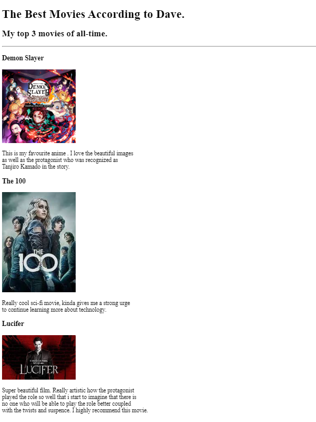
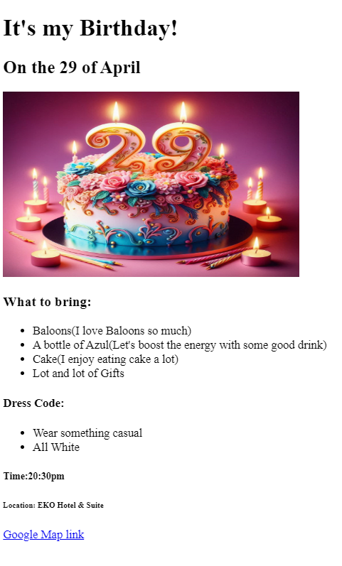

David Ojeifo

Summary
Versatile Junior Web Developer with backend expertise, a knack for research, and time-conscious delivery. An accounting background and customer service experience fuel user-centric solutions. Content writing prowess brings clarity to tech. Seeking innovative projects to blend diverse skills and solve complex challenges.
Education
- ALX Africa__________________________________________2023 - 2024
Software Engineering, Back-end (Certificate of Completion)
- Federal Polytechnic Auchi______________________________ 2014 - 2016
Accountancy (National Diploma)
- St. James Grammar School______________________________2008 - 2013
(West Africa Senior Schoool Certificate)
Work Experience
Agency Manager
October 2020 - January 2025
- Scout and recruit streamers.
- Audition and orienting new streamers.
- Schedule and organise events.
- Track streamers performance and organise payroll.
Customer Service Representative
August 2018 - June 2020
- Answered customers inquiries via phone call and emails.
- Make service/product sales via phone call,emails and online store.
- Resolved customer complaints and issues.
- Create weekly sales/service report.
- Maintained customer records and updated account information.
Machine Operator
September 2013 - Feburary 2014
🔭 Ai Enthusiast
🔭 Web3 Enthusiast
⚡ Fun fact I love Gaming
Here are some of the HTML projects that i have built
- The Movie Ranking Project

- The Birthday Invite Project

- The Isi School
About Me Contact Me Blog